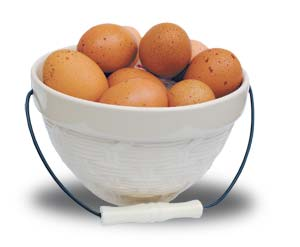
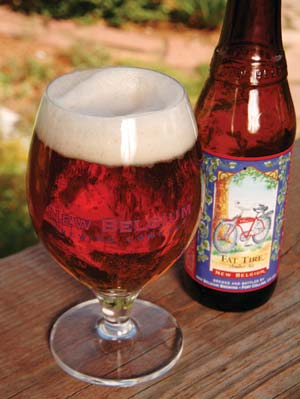
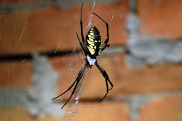

Our report on the nutrient content of free-range eggs prompted a great letter from Tammi Trotter (below). She says their Rhode Island red chicks raised free-range began laying eggs 12 weeks sooner than the same breed of chicks raised in a pen. This could be yet another factor to encourage all egg producers to utilize pastured poultry systems, which in turn would mean more nutritious eggs for the public and more humane conditions for the chickens.
Last issue’s cover story, Live on Less and Love It, prompted a lively exchange online. Several folks were offended by the suggestion that low-income people would promote a national health care system. Others very much appreciated the article; one reader wrote about his neighbors who “embody so much of the thrifty-in-dollars-but-rich-in-creativity lifestyle that MEN has always tried to encourage. I applaud MEN for making this the cover story.” Join the conversation in the comments section below. -Mother
Not only do free-range chickens produce healthier eggs (Meet Real Free-range Eggs, October/November 2007), but they also lay more healthier eggs! On Valentine’s Day 2003, we purchased 25 Rhode Island red chicks through the mail. We confined the chickens in a 10-by-20-foot pen with nesting and roosting facilities. They were fed Tindles starter/grower, and laid their first eggs after about 28 weeks (from chick to egg), confined. Mid-March of this year we ordered a dozen Rhode Island reds from the same hatchery. They were confined and fed the exact same feed until the chicks were feathered. Then we released them to free-range open pasture daily. In the second week of July we found three freshly laid eggs in the nests, and they continued to increase production daily. The only difference between the two flocks was that the second flock was able to free range on open pasture daily. The free-range chickens produced eggs 12 weeks earlier than the confined ones. At 70 percent production, our free-range chickens produced 756 eggs before the confined flock produced its first egg. (That’s 12 hens x 70 percent = 9 eggs per day x 7 days per week x 12 weeks earlier.) If a Mother reader is debating confined versus free-range flocks, this should help them to see the benefits of free-range chickens.
We urge those of you who raise chickens to run similar comparisons and report back to us when your birds begin laying. - Mother
Regarding your article on real free-range eggs: I get them from a local producer and I advise others to do the same. They would definitely see and taste the difference compared to those that are mass-produced. The conventional eggs in the grocery store have no flavor and barely any color in the yolk. The free-range egg has a wonderful, dark yellow yolk and solid white. No runny eggs here. They are packed with flavor. Anyone who says that an egg is an egg is an egg doesn’t know much about eggs.
I was reading your latest article on free-range eggs, and I would like your readers to be aware of possible homeowners’ insurance problems if they want to sell eggs. We have about 80 pastured hens, and we were informed in late May by our insurance company, Atlantic Mutual, that we had to immediately stop selling eggs or face losing our homeowners insurance.
Why? They claimed salmonella. If a customer were to get salmonella, we could not prove that it did not come from our eggs. We’ve spent all summer looking into farm policies from the local Farm Bureau office, but they did not really have a policy for us - a small farm who sells only four to five dozen eggs a day. We also sought to get a separate, additional small farm policy just to cover the egg business (not our house and buildings), but then Atlantic Mutual told us they would not let us keep our umbrella homeowners policy. We then went to other insurance companies, and were given prices upwards of $2,000 in addition to the homeowners’ policy price in order to sell our eggs. Sadly, I made the decision this week to keep only a few of the hens, and give the rest away.
I had been doing this for about six years now, so it was a real shock. My husband is an attorney and, believe me, tried to find a way around this, but couldn’t - at least not honestly.
We will research this issue and report on what we learn. If you’ve had similar problems, or have found solutions, write to us at letters@MotherEarthNews.com. - Mother
As a Toyota Prius owner with a daily round-trip commute of nearly 150 miles, I have been impressed and happily satisfied with a consistent 54 mpg average. However, from watching other Prius drivers on the road I can understand why many of them may not be experiencing similar results (Fuel Economy: Why These Numbers Really Matter, August/September 2007).
It is imperative that you pay attention to the manner in which you drive a hybrid, particularly accelerating and decelerating. While the Prius can respond like a “normal” car, old driving habits will result in poor economy. Rapid acceleration from traffic lights and consistently driving beyond 65 mph will absolutely have adverse affects on your overall mpg.
The onboard computer with both its schematic “consumption” display and running “energy” bar graph are critical tools that can help you fully understand how your driving habits, be it those “jack-rabbit” starts or the “need to speed,” influence your overall economy.
I just read the article concerning fuel economy - wonderful read. I just wanted to let you know about a Web site that I recently found: www.gassavers.org. I have altered my driving habits using some of their tips. The last time I filled up, I calculated my mileage at 38.13 mpg.
My husband, David, and I have a 20-acre homestead in northern Pennsylvania, and we find Mother Earth News to be indispensable. We’ve gotten so many good ideas from you. The latest was the boot scraper, which was featured in your June/July 2007 edition. I had my husband make two. Now if I can only get him to use them!
Your Mother Earth e-newsletter is fabulous! Now that I have enjoyed looking after my three ducks so much this year, I think I will end up doing some sort of smallholding. Because of your newsletter, today I have made homemade butter for the first time (and will continue to do so). Keep up the good work.
I had to write and thank you for all the vegetarian-friendly recipes in your current issue (October/November 2007). I can’t wait to try them all. And Craig Idlebrook’s article about living on less was wonderful! Everyone can appreciate his tips, and I can always use reminders for decreasing my consumption. Keep up the fabulous work, Mother!
Lately I’ve been reading lists of things that we can do to help reduce global warming, and each time I feel like I am being lectured. I understand the need to stop gobbling energy, as it’s not unlimited and it’s not free, but I think it’s time, as the much-needed save-the-planet momentum builds, to be more creative about the message.
So here’s my message: Stop global warming … drink beer. Does that taste better? Willing to participate? Or at least listen? Let’s look at a few issues.
Transporting our food and beverages is one of the largest invisible costs on the environmental balance sheet. Shopping locally can shave those costs, so that’s the first requirement … a local beer … and as I take a slow, sustained slurp of New Belgium’s Fat Tire Amber Ale, brewed nearby in Fort Collins, Colo., I acknowledge those savings and my contribution to reducing the energy crisis.
Water conservation is also a major issue, especially in this part of the United States. In the beer industry, it takes an average of eight to 12 barrels of water to produce one barrel of beer. My local brewery, through reuse and recapture, reports using just four barrels, significantly less than the industry standard.
Almost 10 years ago, my favorite beer-brewing establishment took an employee vote and decided to commit to being the nation’s first wind-powered brewery. Pass me another cold one … that’s worth celebrating!
What I really want to say, though, is that it is important to put an insulation jacket around your hot water heater, caulk your windows, and purchase energy-efficient appliances and cars, but you can also have fun with this newly recognized stewardship. And every step helps. Every one.
So find a local brewery, winery or farmer that is making smart choices and help them, help all of us, by supporting what they are doing (see Good Libations, December 2007/January 2008). And if it happens to be a tasty local beer that makes you feel good about what you are doing, then drink up and know that you are making a difference, even when you’re having fun.
I read with interest your October/November 2007 cover story, Live on Less and Love It. The article’s title got my attention, as I believe we could all do a better job of living on less and ultimately, living within our means. Although Mr. Idlebrook presented many good, common-sense ideas for enjoying life while spending and consuming less, I took exception with suggestion No. 46, recommending a national health care system. Mr. Idlebrook proudly proclaims that his family’s 2005 income was a little over $4,300, with their 2004 income being half of that. I find it outrageous that he expects U.S. taxpayers to fund his family’s healthcare, while he does his best to minimize his income and, therefore, pay minimal to zero income taxes.
I would like to thank Mother for the continued coverage of the National Animal Identification System (NAIS) mandates. I have no doubt that although the USDA has gotten a bloody nose in those states that are fighting against mandatory registration of all livestock, they will redraft and “enforce” a new NAIS under a new name. I beg of you, please publish an article on this in every issue and don’t let it fall by the wayside.
Readers are invited to post NAIS updates on our online article, The Truth About the Animal ID Plan (June/July 2007). - Mother
My wife and I really enjoy reading your magazine. We recently downsized from a 2,700 square foot home to a 1,200 square foot home. Our electric bill went from about $125 per month to $15 to $40 per month. Our new home is built to leverage a simple passive solar design, with stained concrete floors, low-e glass, 10-foot ceilings, porches and lots of windows. So far this year, we have not even uncovered our air conditioner. The average temperature in the house is 72 degrees. By building a smaller, low-maintenance house, we were able to invest in nicer cabinets and other furnishings. We achieved many of our personal retirement goals with this house: low maintenance, small house, reduced recurring expenses, etc.
Thank you for all the years of great information on country living. I have been using Mother since issue No. 1. In the article about small pickup trucks (Choose the Right Pickup Truck, April/May 2007) you missed a great truck-like car, the Subaru Baja. I’ve been using my 2003 Baja for everything any other small pickup could be used for. My wife and I call it a “cruck.” Also, it’s all-wheel drive!
I would just like to say thank you for producing the Mother Earth News Archive CDs" href="http://www.motherearthnews.com/browse.aspx?Subject=ACD" target="_blank">Mother Earth News Archive CDs. I had a complete collection of Mother Earth News magazines from the very beginning through about 1986. They were lost when our storage room flooded in 1994, and I despaired of ever getting all that useful information back again. Now I’m looking forward to many happy hours of re-reading.
Why is Mother Earth News shilling for wind power? I am all for individual windmills, but square miles of windmills across formerly beautiful green earth is so hideous, it makes my heart ache. They’re far worse to see than power lines along the road. What can the land be used for once windmills cover it? Gorgeous vistas are spoiled by this. Birds are instantly butchered. I’ll have one windmill, please, two if needed, on my own property, grouped neatly near the house.
I read You Can Grow Oca! (August/September 2007) with great interest. My sister-in-law told me that it grew at her house and her father ate it raw, green. I was surprised because she comes from the Sierra Madre Oriental, which faces out over the Gulf of Mexico.
There it is known as papa extranjera, foreign potato. It could be that the foreign potato arrived while oca was becoming popular around the world in the 1830s. That might also explain its name. But the ranch is high in the Sierra, and in days past was a two-hour walk from the nearest village - going back to the 1830s, it was a 12-hour walk from any so-called civilization.
The native people of the pre-Columbian Americas were far more accomplished farmers and traders than most of us realize. Read the book 1491 by Charles C. Mann for an astonishing look at what researchers have learned. - Mother
I was scared of spiders ’til I came across a yellow garden spider nine years ago. I named her Georgina. I have been caring for her offspring ever since. Every year, one female remains close to the house. They even take food out of my hand. Each year all my Georginas die. I wondered if it was weather or predestined life span. So I brought Georgina IX inside and set up her own habitat. She took to it like a fish to water and takes food from me. Never once in the nine years have I been bitten by my Georginas.
I was extremely disappointed in the Green Gazette article in the October/November 2007, issue Better Basics for Bringing Up Baby. Apparently, you did not read the following article, Live on Less and Love It, otherwise you might not be suggesting a $105 baby carrier when a simple Maya wrap can be had for less than $15 (in fabric - you make it yourself) and can take a child from newborn to 5 years old. I don’t know where you could find the funds for 12 (a two-day supply if you are lucky) Fuzzi Bunz Diapers (Total: $239.88 + shipping).
Our son Taliesan is 6 months old, and has been in cloth diapers since the moment he was born (and we spent only $136 for a 43-day supply, if we never did laundry). This was through a combination of eBay, friends and family. Don’t get me started on the $260 mattress (our queen-sized one didn’t cost that much) or the $18 baby bottles. (Hello! The American Academy of Pediatrics recommends breast-feeding anyway.) There are many simpler and less expensive ways for you and your child to be comfortable and environmentally friendly from the beginning.
In “Material for Thought” (Dear Mother, August/September 2007), one of your readers wrote to express concern that some Wal-Mart stores may soon stop carrying fabric by the yard.
Wal-Mart is the very reason many small towns across rural America don’t have access to other fabric stores. Where I grew up in northwest Kansas, the local fabric store, and most of the locally owned businesses downtown, were forced to close after Wal-Mart moved in. Over and over, I have seen how big business like Wal-Mart destroys local economies and lowers the quality of small-town life.
After reading “Material for Thought,” I was fairly disappointed in the question and especially in your response. I read Mother Earth News because I believe in supporting a more local and healthy environment and economy. Wal-Mart does next to nothing to support either, and I am witness to Wal-Mart causing the demise of at least three locally owned fabric stores. I would have hoped to see some community-based suggestions that could help her locally. Some examples would be starting a sewing guild co-op for buying fabric, or a small business that would replace the inadequacies of Wal-Mart. If you have to shop outside the community, there is always mail order or the Internet. Support your locally owned businesses before you support Wal-Mart!
I read Fall’s Sweetest Harvest (October/November 2007) with interest, as we made apple cider at home when I was a youngster. The article piqued my interest, but only in making small batches and not spending a lot of money on a press that would sit, unusable, most of the time. I, like most people interested in getting started with making apple cider, would probably only make a few gallons.
I opened a search engine and typed in “DIY Apple Cider Press” and came across a homemade grinder. I thought your readers might want to visit the site for a low-cost alternative to the two commercial presses that you show in the article. The journey, and really doing it yourself, is the reward.
You can also find plans for DIY cider presses at www.MotherEarthNews.com. - Mother
Here in the outback of Australia we have always collected our rainwater in corrugated iron tanks. The government is now subsidizing city dwellers to install collectors to augment the town water.
My mother-in-law lived alone in the bush and only had one thousand-gallon tank for all her life. Frogs consumed all the larvae and the odd insect. She had a small tree limb reaching from the top to the bottom of the tank so the frogs could come and go. My own collector is a 15,000 gallon concrete storage tank from which I pump up to a 1,000 gallon corrugated galvanized iron header for all my domestic needs. One inch of rain provides nearly a thousand gallons, when it rains, that is. I’ve never run out of water and do have a flush toilet septic system.
I found the list of 75 ways to live on less (October/November 2007) to be true to the Mother Earth philosophy of being self-reliant, frugal and sparing of the use of the world’s resources. Not everyone has had the breaks that I’ve had. Many people have to live frugally. I live in a rural area with many elderly people who live on fixed Social Security incomes (most were farmers, so never made much money while they were in the workforce). Yet they embody so much of the thrifty-in-dollars-but-rich-in-creativity lifestyle that MEN has always tried to encourage. I applaud MEN for making this the cover story.
|
 MATTHEW T. STALLBAUMER Real free-range eggs offer better nutrition and less cholesterol than conventional eggs. |
 GEORGE WHEELER Reduce your carbon footprint by buying locally made beer, wine and food. |
ISTOCKPHOTO/TERRANCE EMERSON Wind turbines provide clean, renewable energy, but readers debate their aesthetic merits. |
|
 ISTOCKPHOTO/JOHN MEIER One Mother reader overcame a fear of Spiders to befriend Georgina, a spider much like this yellow and black garden spider |
|
|